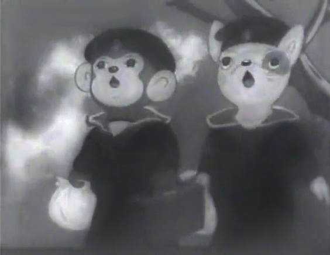

L ' h i s t o i r e d e l ' a n i m e
Le tout premier animé à été Momotaro, le divin soldat de la mer. Cet animé est sorti pendant la seconde guerre mondiale en mille neuf-cent quarante cinq. Son but était de provoquer des vocations chez les soldats tout en faisant comprendre à la société japonaise tout le bien de s'engager dans l'armée et de soutenir l'effort de guerre.
L'image ci-dessous va vous envoyer sur le site momotaro le divin soldat de la mer
Comme Maintenant vous le savez les animés ont commencé dans les années quarante avec Momotaro, le divin soldat de la mer. Après La guerre, il y aura la création de deux grands studios de l'animation japonaise, Toei animation et Mushi production. Toei fera son apparition en quarante-huit et Mushi en soixante-deux. Toei animation sera connu car il aura publier deux animés renomés, Dragon ball et Sailor Moon. Mushi production a fait la même chose que toei en publiant, Astro le petit robot en soixante-trois. Mushi n'aurait pas fait un meilleur succès que Tohei mais il restera une légende dans l'animer japonaise. Dans les années septente, Toei arrête de produire des comédies musicales et se lance dans des séries télévisées. Mushi sera mis en banqueroute donc ses animateurs seront dans d'autres studios. Début quatre-vingt l'age d'or des animés débutera. Il y aura un nouvel événement les robots géants super héros. Cela Donnera un succès fou avec Goldorak(mille neuf-cent septante-cinq). En plus de cela la téchnologie évolue très rapidement car les coûts pour les animés diminuent donc il y aura beaucoup plus d'animées qui sortirons durant cette décennie. Dans les années 90 jusqu'à aujourd'hui les animés commencent à réelement devenir populaire avec la sortie de Néon Genesis Evangelion (mille neuf-cent nonante-cinq) et grâce au succès Monstrueux de Pokémon les animés seront de plus en plus regardés et appréciés. Durant les années suivantes de nombreux animés connus feront leur apparition tout comme, Attack on titan, Bleach, Naruto, One Piece et encore bien d'autres..